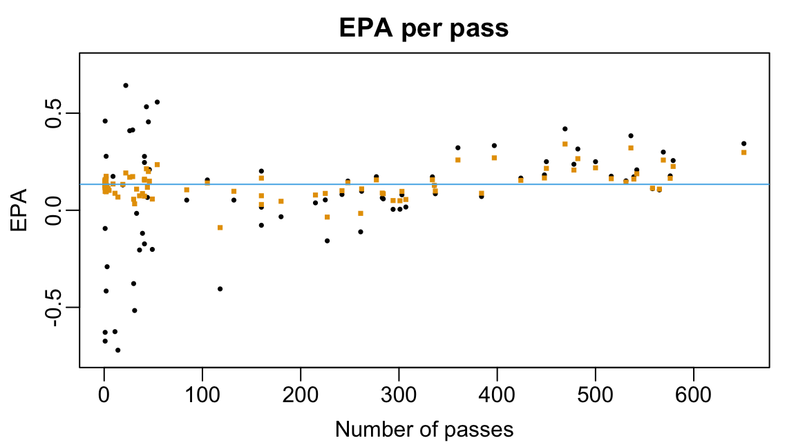

install.packages("nflfastR")Lecture 9: Expected Points Added & Multilevel Modeling
Overview
Which of the two touchdown plays is more impressive?
- The 86-yard touchdown pass from Justin Herbert to Ladd McConckey (video link)
- The 64-yard touchdown pass from Cooper Rush to Kavonte Turpin (video link)
While these two plays share many similarities — they were both thrown on 3rd down, out of the shotgun formation with no running back, against the Houston Texans, when the team on offense was trailing, and resulted in a score — there are some big differences: Herbert and the Chargers needed 26 yards to gain a first down while the Cowboys need only 10; Herber threw his pass from a collapsing pocket while Rush threw with essentially no pressure; McConckey broke at least one tackle after catching the pass. Based on these qualitative differences, we might view the first touchdown pass as more impressive. In this lecture, we introduce expected points (EP) and expected points added (EPA), which together facilitate a more nuanced, quantitative comparison of plays. Then, using a multilevel model, we will identify the players whom we would expect to generate the most expected points per passing attempt.
Accessing play-by-play NFL data
We will use of the play-by-play data available from the nflfastR package.
Warning
If you haven’t already done so, be sure to install the package using the code
The package contains several functions for efficiently scraping NFL data and for pre-processing the play-by-play data. In this lecture and in Lecture 10, we will work with pre-processed play-by-play data, which we can load into our R session using the function [nflfastR::load_pbp()](https://www.nflfastr.com/reference/load_pbp.html).
pbp2024 <-
nflfastR::load_pbp(season = 2024)Each row of the table pbp2024 corresponds to an individual play from the 2024-25 NFL season. The data table contains information about 49492 distinct plays. Some columns of pbp2024 contain game-level information like a unique identifier for the game (game_id); the week in which the game was played (week); whether the play took place in a regular season game (season_type = "REG") or play-off game (season_type="POST"); and the identities of the home and away team (home_team and away_team). Several columns record information about the state of the game just before the start of the play including the which team has possession of the ball (posteam) and which team is on defense (defteam); the scores of the two teams (posteam_score and defteam_score); the amount of time left in the quarter (time); the location of the ball at the start of the play (side_of_field and yardline_100); and the down and distance to the first down marker (down, ydstogo). The table also contains columns recording information about the state of the game as soon as the play ends including the scores of both teams (posteam_score_post and defteam_score_post) and the number of yards gained on the play (ydsgained). It finally contains a large number of columns that record exactly what happened during the play including the type of play (e.g., run, pass, kickoff, punt, etc.; play_type); a narrative description of the play (desc); several self-explanatory indicators of what happened (e.g., fumble, complete_pass, and passing_yards). You can find a full listing of the variableshere.
nflfastR identifies players using a unique 9-digit identifier provided by Game Statistics and Information Systems (GSIS). We can load a table containing roster information, including player identifier, name, position, and team using the function nflfastR::fast_scraper_roster()
roster2024 <-
nflfastR::fast_scraper_roster(seasons = 2024)Expected Points in Football
Paraphrasing Yurko, Ventura, and Horowitz (2019), the expected points framework uses historical data to estimate the average number of points eventually scored by teams in similar situations. Similar to what we did in Lecture 6 with expected runs at the start and end of at-bats in baseball, the difference between the post-snap and pre-snap expected points is Generally speaking, plays that result in positive EPA are considered successful while plays resulting in negative EPA are not.
Yurko, Ventura, and Horowitz (2019) introduced an expected points model that focused on predicting the next scoring event in the half after each play. The “next score” responses, ignoring points after touchdown (PAT) attempts, are, with respect to the team in possession:
- Touchdown (TD), which is worth 7 points
- Field goal (FG), which is worth 3 points
- Safety (SAF), which is worth 2 points
- No score (NS), which worth 0 points
- Opponent safety (oSAF), which is worth -2 points
- Opponent field goal (oFG), which is worth -3 points
- Opponent touch down (oTD), which is worth -7 points
Formally, for every play, we can collect features summarizing the state of the game in the \(\boldsymbol{\mathbf{Z}}.\) Typically, these features will include things like the time left in the half, the current score, the down and distance to the first down line, etc.
Estimating \(\textrm{EP}(\boldsymbol{\mathbf{x}})\)
nflfastR implements a version of Yurko, Ventura, and Horowitz (2019)’s original EP model. At a high-level, it is a multinomial classification model built using extreme gradient boosting (xgboost). Like random forests, xgboost builds an ensemble of decision trees, each of which map a vector of game state feature \(\boldsymbol{\mathbf{x}}\) to one of the next score outcomes \(k.\) The final prediction is formed using the proportions of trees outputting a certain outcome. More details are about nflfastR’s EP model are available here.
Basic uses of EPA
For each play in pbp2024, the column epa records the expected points added on the play. It turns out that the Herbert-to-McConckey touchdown introduced in Section 1 was the play with the largest EPA. At the start of the play, the Chargers were facing 3rd and 26 from their 14 yard line. According to nflfastR’s EP model, teams starting from the same position score about -1.54 points. The Chargers ended the play with a touchdown, which corresponds to a terminal game state with an EP of 7. Thus, their EPA on the play was 7-(-1.54) = 8.54.
pbp2024 |>
dplyr::slice_max(epa) |>
dplyr::select(ep, desc)# A tibble: 1 × 2
ep desc
<dbl> <chr>
1 -1.54 (10:50) (Shotgun) 10-J.Herbert pass deep middle to 15-L.McConkey for 86…It turns out that Turpin’s 64-yard touchdown was Dallas Cowboys’ passing play with the largest EPA across the whole season.
pbp2024 |>
dplyr::filter(posteam=="DAL" & play_type == "pass") |>
dplyr::slice_max(epa) |>
dplyr::select(ep, desc)# A tibble: 1 × 2
ep desc
<dbl> <chr>
1 0.775 (15:00) (Shotgun) 10-C.Rush pass short right to 9-K.Turpin for 64 yards…Facing 3rd down with 10 yards to go from their own 36 yard line, the Cowboys were expected to score about 0.77 points at the start of the play. By scoring a touchdown, they gained 7-0.77 = 6.23. Because the Chargers scored from a much less favorable starting point than the Cowboys in terms of EP, one could argue that the 86-yard touchdown is more impressive than the 64-yard touchdown.
Beyond comparing individual plays, we can rank different teams’ offenses by their average EPA per play
pbp2024 |>
dplyr::group_by(posteam) |>
dplyr::summarize(epa = mean(epa, na.rm = TRUE)) |>
dplyr::arrange(desc(epa)) |>
dplyr::slice(c(1:5, (dplyr::n()-4):(dplyr::n())))- 1
- Divide plays by offensive team
- 2
- Compute the average EPA for each team’s offense
- 3
- Show only the top-5 and bottom-5 teams in terms of average EPA per play
# A tibble: 10 × 2
posteam epa
<chr> <dbl>
1 BAL 0.143
2 BUF 0.141
3 DET 0.135
4 WAS 0.115
5 TB 0.103
6 NE -0.0643
7 NYG -0.0829
8 TEN -0.0896
9 LV -0.107
10 CLE -0.151 Interestingly, the top three offenses in terms of average EPA (the Baltimore Ravens, Buffalo Bills, and Detroit Lions) were also the three highest scoring offenses in the 2024 season, each scoring over 30 points per game, on average.
Predicting EPA on a new pass
Based on the 2024-25 regular season data, how much EPA would we expect to see on a hypothetical future passing play? Without any additional information about the play — i.e., who threw the pass, how long the pass was, whether it was thrown out of the shotgun formation, etc. — it seems reasonable to use the average EPA across all passing plays in our data set. But, if we knew the identity of the passers, we might reasonably expect the average EPA across their passes would yield better predictions.
To compute the league-wide and player-specific average EPAs, we first create a data table containing only the passing plays from the regular season. We can do this by filtering on the variables play_type and season_type. We see that there are about 19,000 pass plays in the regular season.
table(pbp2024[,c("play_type", "season_type")]) season_type
play_type POST REG
extra_point 61 1241
field_goal 51 1115
kickoff 146 2803
no_play 205 4729
pass 853 19153
punt 73 2046
qb_kneel 32 405
qb_spike 4 71
run 726 14318In addition to EPA, we also include the unique identifier of the passer (passer_player_id) and a narrative description of the play (desc).
pass2024 <-
pass2024 <-
pbp2024 |>
dplyr::filter(play_type == "pass" & season_type == "REG") |>
dplyr::filter(!grepl("TWO-POINT CONVERSION ATTEMPT", desc) &
!grepl("sacked", desc)) |>
dplyr::select(epa, passer_player_id, desc)
pass2024 |> dplyr::slice_head(n = 2)- 1
- For now, we will ignore 2-point conversion passing attempts. We also ignore sacks, which nflfastR sometimes treat as passing plays
── nflverse play by play data ──────────────────────────────────────────────────ℹ Data updated: 2025-08-11 15:43:02 EDT# A tibble: 2 × 3
epa passer_player_id desc
<dbl> <chr> <chr>
1 2.03 00-0035228 (14:27) 1-K.Murray pass short left to 6-J.Conner to BU…
2 0.754 00-0035228 (13:43) (Shotgun) 1-K.Murray pass short middle to 6-J.…After excluding passes on two-point conversion attempts and sacks, we have data for 17727 passes thrown by 103 players. Across all passes and passers, the average EPA per pass is about 0.159.
mean(pass2024$epa)[1] 0.1589677Computing player-specific EPA per pass
Given the vast spread of EPAs in our dataset (roughly -12.7 to 8.5), using the league-wide average of 0.159 to predict the EPA on a future pass is rather unsatisfactory. One avenue for improvement is to condition on additional information like the identity of the passer, which is recorded in the column passer_player_id. Intuitively, we might expect a superstar quarterback like Patrick Mahomes to generate more EPA per pass than Daniel Jones, who was benched and released by his team mid-way through the season.
We will model the observed EPA on each passing play as a noisy observation of an underlying average EPA specific to each passer. So, the EPA’s on passes thrown by Dak Prescott, for instance, are treated as noisy measurements of his average EPA. We can then predict the EPA on a future pass thrown by Prescott using an estimate of his per-pass EPA. We can further rank passers by their per-pass EPAs.
Formally, suppose that we have data for \(I\) unique passers1 and for each passer \(i = 1, \ldots, I,\) let \(n_{i}\) be the total number of passes thrown by passer \(i.\) Further, for each \(j = 1, \ldots, n_{i},\) let \(Y_{ij}\) be the EPA on the the \(j\)-th pass thrown by passer \(i.\) Let \(\alpha_{i}\) be the underlying — and as yet unknown — average EPA for passer \(i.\) We model \(Y_{ij} = \alpha_{i} + \epsilon_{ij}\) where the random errors \(\epsilon_{ij}\) have mean zero and are assumed to be independent across passers and passes.
While we can certainly run this calculation by grouping plays in pass2024 by passer_player_id and then computing the average EPA of the plays involving each passer, for reasons that will hopefully become clear soon, we will instead estimate the \(\alpha_{i}\)’s by fitting a linear regression model with ordinary least squares. Specifically, we will regress epa onto the categorical variable passer_player_id, which we will represent as a factor variable. When run with a single categorical predictor, function lm() does not directly estimate the average outcome within each level of the predictor. Instead, it returns the average outcome within one reference level of the predictor and the average difference in outcomes between the non-reference levels and the reference. We will, rather arbitrarily, use Aaron Rodgers as the reference player.
rodgers_id <-
roster2024 |>
dplyr::filter(full_name == "Aaron Rodgers") |>
dplyr::pull(gsis_id)
pass2024 <-
pass2024 |>
dplyr::mutate(
passer_player_id = factor(passer_player_id),
passer_player_id = relevel(passer_player_id, ref = rodgers_id))- 1
- Pull out Aaron Rodgers’ id number
- 2
- Set the reference level to Rodgers
We can now fit our linear model and collect the estimated parameters in the vector ols_betas. Notice that the names of all but the first element of ols_betas contain the string “passer_player_id” and a player identifier.
ols_fit <-
lm(formula = epa ~ 1 + passer_player_id,
data = pass2024)
ols_betas <- coefficients(ols_fit)
ols_betas[1:5]- 1
-
The
1+is not strictly necessary (since R usually includes an intercept by default). - 2
-
Because the
formulaargument only involvesepaandpasser_player_id, none of the other variables inpass2024are included as outcomes or predictors in the model - 3
- Print out a handful of parameter estimates
(Intercept) passer_player_id00-0026158
0.11303340 0.04427535
passer_player_id00-0026300 passer_player_id00-0026498
-0.32316791 0.05621013
passer_player_id00-0027973
-0.19838613 In our simple EPA model, the estimated intercept is exactly the average EPA on all passes thrown by Aaron Rodgers.
mean( pass2024$epa[pass2024$passer_player_id == rodgers_id])[1] 0.1130334To get the average EPA on all passes thrown by a different quarterback (e.g., Dak Prescott whose id is 00-0033077), we need to add the corresponding entry in ols_beta to the estimated intercept2.
mean(pass2024$epa[pass2024$passer_player_id == "00-0033077"]) [1] 0.05691811ols_betas["passer_player_id00-0033077"] + ols_betas["(Intercept)"]passer_player_id00-0033077
0.05691811 We will repeat this calculation for each of the 101 unique passers in our data set and build a table alphas with columns containing the player’s identifier, name, and average EPA on passing plays. In the following code, we strip out the string “passer_player_id” from the names of ols_beta.
names(ols_betas)[1] <- paste0("passser_player_id", rodgers_id)
names(ols_betas) <-
stringr::str_remove(string = names(ols_betas), pattern = "passer_player_id")
alphas <-
data.frame(gsis_id = names(ols_betas), ols = ols_betas) |>
dplyr::mutate(ols = ifelse(gsis_id == rodgers_id, ols, ols + dplyr::first(ols))) |>
dplyr::inner_join(y = roster2024 |> dplyr::select(gsis_id, full_name), by = "gsis_id")- 1
-
Rename first element of
ols_betaso its name follows the same format as the names of all other elements - 2
-
Remove the string “passer_player_id” from all names of
ols_beta - 3
-
Facilitate a later join with
roster2024, which records player identifiers asgsis_id - 4
-
Since the first row of
alphascorresponds to Aaron Rodgers, we need to add the first element in the columnolsto all other elements in the column.
Somewhat surprisingly, the top- and bottom-five passers based on average EPA per play are not quarterbacks but include kickers. What’s going on??
alphas |>
dplyr::arrange(dplyr::desc(ols)) |>
dplyr::slice(c(1:5, (dplyr::n()-4):dplyr::n())) |>
dplyr::select(full_name, ols) full_name ols
1 AJ Cole 4.333918
2 Courtland Sutton 3.745369
3 Jack Fox 3.637429
4 Justin Jefferson 3.050907
5 Stefon Diggs 2.762919
6 Miles Killebrew -2.677720
7 J.K. Scott -2.706606
8 Bryan Anger -2.843511
9 Johnny Hekker -2.856017
10 Keenan Allen -5.911163Issues with our initial model
By this point in the course, you probably already suspect what’s going on: the extreme average EPA estimates are artifacts of small sample sizes. To verify that this is so, we’ll add a column to alphas recording the number of passes thrown by each player.
n_passes <-
pass2024 |>
dplyr::group_by(passer_player_id) |>
dplyr::summarise(n = dplyr::n()) |>
dplyr::rename(gsis_id = passer_player_id)
alphas <-
alphas |>
dplyr::inner_join(y = n_passes, by = "gsis_id")
alphas |>
dplyr::arrange(dplyr::desc(ols)) |>
dplyr::slice(c(1:5, (dplyr::n()-4):dplyr::n()))- 1
- Counts the number of passes thrown by each player in our dataset
- 2
-
So that we can join the counts to
alphas, we need to rename the column recording the player identifiers - 3
- Look at the top-5 and bottom-5 rows
gsis_id ols full_name n
1 00-0035190 4.333918 AJ Cole 1
2 00-0034348 3.745369 Courtland Sutton 2
3 00-0035156 3.637429 Jack Fox 1
4 00-0036322 3.050907 Justin Jefferson 1
5 00-0031588 2.762919 Stefon Diggs 1
6 00-0032399 -2.677720 Miles Killebrew 1
7 00-0034162 -2.706606 J.K. Scott 1
8 00-0029692 -2.843511 Bryan Anger 2
9 00-0028872 -2.856017 Johnny Hekker 2
10 00-0030279 -5.911163 Keenan Allen 1As anticipated, the passers with the top- and bottom-5 per-pass EPA all threw 1 or 2 passes. For instance, AJ Cole is a punter who threw a single pass that ultimately gained 34 yards and resulted in a very large EPA of around 4.33.
pass2024 |>
dplyr::filter(passer_player_id == "00-0035190") |>
dplyr::select(desc, epa)── nflverse play by play data ──────────────────────────────────────────────────ℹ Data updated: 2025-04-30 02:39:06 EDT# A tibble: 1 × 2
desc epa
<chr> <dbl>
1 (8:33) (Punt formation) 6-A.Cole pass short right to 5-D.Deablo to DEN … 4.33Plotting each player’s average EPA against the number of pass attempts reveals that there is a lot of (resp. very little) variation in EPA-per-pass among passers who threw a very small (resp. very large) number of passes.
oi_colors <-
palette.colors(palette = "Okabe-Ito")
par(mar = c(3,3,2,1), mgp = c(1.8, 0.5, 0))
plot(alphas$n, alphas$ols,
xlab = "Number of passes",
ylab = "Avg. EPA per pass",
main = "EPA per pass",
pch = 16, cex = 0.5, col = oi_colors[1])
abline(h = mean(pass2024$epa), col = oi_colors[3])
Towards partial pooling
Let’s return to the problem of forecasting EPA on a single new pass based solely on the identity of the passer. One option is to ignore the passer identity and just use the overall mean of about 0.159. Doing so completely ignores differences between passers, which is fairly unreasonable given the large gaps in talent between NFL quarterbacks. At the other extreme, we could use the player-specific average EPA estimates. While this approach acknowledges differences between players, it can sometimes lead to very extreme estimates. Neither option seems particularly compelling.
As with most things, an ideal solution lies somewhere between the two extremes. For players who threw a large number of passes, we may be more comfortable using the their average EPA value since we are more certain about its value3. But for players who threw a very small number of passes, it’s probably safe to assume that they’ll perform closer to the league-average rather than to rely on their potentially very noisy average EPA estimate4. And for players who threw a moderate number of passes, we might prefer a value somewhere between the league-wide average and the player-specific estimate.
Formally, we can form such predictions with a weighted average: letting \(\overline{y}\) be the overall league-wide average, we can predict the EPA on a new pass thrown by player \(i\) using the quantity \[ w_{i}\times \hat{\alpha}_{i} + (1 - w_{i}) \times \overline{y}, \] where the weight \(w_{i}\) depends on the number of passes thrown by player \(i\) and how far \(\hat{\alpha}_{i}\) differs from \(\overline{y}.\) Ideally, if a player \(i\) throws a large number of passes the weight \(w_{i}\) assigned to his empirical average EPA would be close to 1 and and if he threw very few passes, the weight would be set much closer to 0. The hope is, in other words, that we could differentially shrink every player’s raw average per-pass EPA towards the grand mean.
Multilevel models
multilevel models provide a principled way to compute these weights automatically. Like in our initial analysis, our first multilevel will model the observed EPA’s as noisy measurements of some underlying player-specific parameter. However, we make an additional model assumption: that the \(\alpha_{i}\)’s are themselves normally distributed around some grand mean \(\alpha_{0}\) with standard deviation \(\sigma_{\alpha}.\) We can specify our model in two levels: \[ \begin{align} \textrm{Level 1}&: &\quad Y_{ij} &= \alpha_{i} + \epsilon_{ij}; \epsilon_{ij} \sim N(0, \sigma^{2}) \quad \textrm{for all}\ j = 1, \ldots, n_{i},\ i = 1, \ldots, I \\ \textrm{Level 2}&: &\quad \alpha_{i} &= \alpha_{0} + u_{i}; u_{i} \sim N(0, \sigma^{2}_{\alpha}) \quad \textrm{for all}\ i = 1, \ldots, I \end{align} \]
The Level 1 model says that for each passer \(i,\) the observed EPAs on his passing plays are normally distributed around his latent averge EPA per play \(\alpha_{i}.\) The parameter \(\sigma\) quantifies the amount by which we expect each passer’s EPAs to deviate from his latent average. In our model, we assume that this “within-passer” variability is the same across passers.
In Level 2 of our model, the responses (\(\alpha_{i}\)) are not observed quantities but rather unknown regression coefficients that appear in the Level 1 model. Level 2 of our model assumes that the passers constitute a random sample from some super-population of passers in which latent per-pass EPAs follow a normal distribution. The parameter \(\alpha_{0}\) represents the global average per-pass EPA value across this super-population. The parameter \(\sigma_{\alpha}\) captures the average deviation between each passer’s latent EPA per-play and the global average.
To see why a multilevel model might make sense here, imagine trying to make a prediction about the EPA on a pass thrown by a new player not already in our original dataset. If we fit the usual multiple linear regression model (i.e., only the Level 1 model and ignored the grouping structure & Level 2), there is really no way for us to make a principled prediction about his latent EPA per play. But with a multilevel model, if we’re willing to assume that the player is also drawn from the same super-population of passers, we can predict his latent EPA per play by drawing from a \(N(\hat{\alpha}_{0}, \hat{\sigma}^{2}_{\alpha})\) distribution. Effectively, multilevel models allow us to “borrow information” across different groups.
In general, multilevel models are used when observations in a dataset display hierarchical grouping structure (e.g., passes grouped by quarterbacks, students in classrooms in schools, etc.). Often in these settings, the grouping variables are believed to be relevant to the outcome of interest and can induce correlation between observations within the same group. Moreover, we might expect that outcomes from the same group to be more tightly clustered around a group-level average than around the overall grand mean. For instance, if a particular medical practice uses a new, highly effective treatment strategy, knowing the outcome of one patient from that practice who received the treatment provides a lot of information about the potential outcome of another patient from that practice who also received the treatment. As we will soon see, the standard multiple linear regression model with which you are already familiar tends not to perform well in the presence of grouping structure, largely because it assumes observations are independent.
Warning
The above is by no means a comprehensive review of multilevel models, which is beyond the scope of this course. I highly recommend Chapter 8 of the book Beyond Multiple Linear Regression. I also recommend this blog post, which discusses how the R syntax maps onto the multilevel model notation.
Fitting our multilevel model
We can fit multilevel models using the lme4 package. This cheatsheet provides a really nice overview of the underlying concepts and the relevant R syntax.
library(lme4)
multilevel_fit <-
lmer(formula = epa ~ 1 + (1|passer_player_id),
data = pass2024)- 1
-
The term
(1 | passer_play_id)signals tolmer()that there should be a separate random intercept for every passer
The model summary contains a lot of useful information about our model
summary(multilevel_fit)Linear mixed model fit by REML ['lmerMod']
Formula: epa ~ 1 + (1 | passer_player_id)
Data: pass2024
REML criterion at convergence: 65351.6
Scaled residuals:
Min 1Q Median 3Q Max
-8.3587 -0.5309 -0.1400 0.5547 5.4923
Random effects:
Groups Name Variance Std.Dev.
passer_player_id (Intercept) 0.01518 0.1232
Residual 2.33009 1.5265
Number of obs: 17723, groups: passer_player_id, 101
Fixed effects:
Estimate Std. Error t value
(Intercept) 0.1297 0.0207 6.265First, we find the estimate of the overall grand mean EPA per play in the “Fixed effects” section: the average EPA across all passers and passes is estimated to be \(\hat{\alpha}_{0} \approx 0.1294.\) The “Random effects” section reports our estimates \(\hat{\sigma} \approx 1.526\) and \(\hat{\sigma}_{\alpha} = 0.123\) of, respectively, the variability in EPA that we’d expect to see between passes thrown by the same player and the variability in latent EPA per pass across the different passers. The fact that \(\hat{\sigma}_{\alpha}\) is so much smaller than \(\hat{\sigma}\) suggests that most of the variability in observed passing play EPA is driven more by noise than differences in latent player ability.
We can use the function ranef to extract the estimates of the \(u_{i}\)’s , the function fixef to extract the estimate of \(\alpha_{0},\) and the function coef to extract the estimates of \(\alpha_{i} = \alpha_{0} + u_{i}.\) The function coef returns a named list with one element per grouping variable5. Each element of the coef’s output is a data frame with named rows
tmp <- coef(multilevel_fit)
tmp[["passer_player_id"]] |> dplyr::slice_head(n = 5)- 1
- For brevity, we only display the first 5 rows
(Intercept)
00-0023459 0.1164973
00-0026158 0.1467385
00-0026300 0.1231416
00-0026498 0.1601689
00-0027973 0.0199101We will append our multilevel estimates to our data table alpha
lmer_alpha <-
data.frame(
lmer = tmp[["passer_player_id"]][,1],
gsis_id = rownames(tmp[["passer_player_id"]]))
alphas <-
alphas |>
dplyr::inner_join(y = lmer_alpha, by = "gsis_id")- 1
- We’ll create a data frame with columns containing the player identifier and their corresponding parameter estimate
- 2
-
In this case, the output of
coefis a matrix with 1 column whose row names are just the levels of the grouping variable - 3
-
For our eventual join, we will store the player’s identifier as
gsis_id
Our multilevel model returns very high per-pass EPA estimates for several top quarterbacks and very low estimates for quarterbacks widely regarded to have struggled in 2024-25.
alphas |>
dplyr::arrange(dplyr::desc(lmer)) |>
dplyr::slice(c(1:5, (dplyr::n()-4):dplyr::n())) |>
dplyr::select(full_name, lmer, n) full_name lmer n
1 Lamar Jackson 0.36827643 469
2 Jared Goff 0.33318327 536
3 Josh Allen 0.27346854 482
4 Joe Burrow 0.27175401 651
5 Baker Mayfield 0.27066068 569
6 Andy Dalton 0.01991010 160
7 Drew Lock 0.01613596 180
8 Anthony Richardson 0.01212565 261
9 Spencer Rattler -0.04063512 227
10 Dorian Thompson-Robinson -0.13685136 118We see that our multilevel estimates for players who threw very few passes are are aggressively shrunk towards to the overall grand-mean.
alpha0_hat <- fixef(multilevel_fit)["(Intercept)"]
par(mar = c(3,3,2,1), mgp = c(1.8, 0.5, 0))
plot(alphas$n, alphas$ols,
ylim = c(-4.5, 4.5),
xlab = "Number of passes",
ylab = "Avg. EPA per pass",
main = "EPA per pass",
pch = 16, cex = 0.5, col = oi_colors[1])
points(alphas$n, alphas$lmer, pch = 15, col = oi_colors[2], cex = 0.5)
abline(h = alpha0_hat, col = oi_colors[3])- 1
-
The function
fixef()returns all the fixed effects (see below) in a named vector. As this is an intercept-only model, we use the name “(Intercept)” to access the parameter estimate.

Adjusting for additional covariates
Up to this point, we’ve worked with a rather toy problem, predicting EPA given only the identity of the passer. But what if we include additional information about the pass (e.g., whether it was throw by the home or away team, whether it was thrown out of the shotgun formation, etc.)? Do we still run into the small sample size issues when determining how much EPA an individual player adds, after accounting for this other information?
To see, we re-build our data table pass2024 but now include: * air_yards: the distance traveled by the pass through the air6 * shotgun: whether the pass was thrown out of the shotgun formation * qb_hit: whether the quarterback was hit while throwing * no_huddle: whether the play was run without a huddle * posteam_type: whether the home team had possession (i.e., was on offense) * pass_location: whether the pass was thrown to the left, right, or center of the field
pass2024 <-
pbp2024 |>
dplyr::filter(play_type == "pass" & season_type == "REG") |>
dplyr::filter(!grepl("TWO-POINT CONVERSION ATTEMPT", desc) &
!grepl("sacked", desc)) |>
dplyr::select(epa, passer_player_id,
air_yards,
posteam_type, shotgun, no_huddle, qb_hit,
pass_location,
desc)
pass2024 |> dplyr::slice_head(n = 2)# A tibble: 2 × 9
epa passer_player_id air_yards posteam_type shotgun no_huddle qb_hit
<dbl> <chr> <dbl> <chr> <dbl> <dbl> <dbl>
1 2.03 00-0035228 -3 away 0 0 0
2 0.754 00-0035228 2 away 1 0 0
# ℹ 2 more variables: pass_location <chr>, desc <chr>For pass \(j\) thrown by passer \(i,\) let \(\boldsymbol{\mathbf{x}}_{ij}\) be a vector containing the features air_yards, posteam_type, shotgun, no_huddle, qb_hit, and pass_location. We can elaborate our initial single-level regression model, which doesn’t account for the grouping structure, to adjust for the effects of these factors: \[
Y_{ij} = \alpha_{i} + \boldsymbol{\mathbf{x}}_{ij}^{\top}
\] Under this model, \(\alpha_{i}\) represents the amount of EPA that can be attributable to the passer over and above what can be explained by these factors. When we fit this single-level linear model using lm, we find that the estimated passer-specific intercepts display the exact same small sample size artifacts as our initial intercept-only model.
ols_fit_full <-
lm(epa ~ passer_player_id + air_yards + posteam_type + shotgun + no_huddle + qb_hit + pass_location,
data = pass2024)
ols_betas_full <- coefficients(ols_fit_full)
names(ols_betas_full)[1] <- paste0("passser_player_id", rodgers_id)
names(ols_betas_full) <-
stringr::str_remove(string = names(ols_betas_full), pattern = "passer_player_id")
alphas_full <-
data.frame(gsis_id = names(ols_betas_full), ols = ols_betas_full) |>
dplyr::mutate(ols = ifelse(gsis_id == rodgers_id, ols, ols + dplyr::first(ols))) |>
dplyr::inner_join(y = roster2024 |> dplyr::select(gsis_id, full_name), by = "gsis_id") |>
dplyr::inner_join(y = n_passes, by = "gsis_id")
alphas_full |>
dplyr::arrange(dplyr::desc(ols)) |>
dplyr::slice(c(1:5, (dplyr::n()-4):dplyr::n())) |>
dplyr::select(full_name, ols, n)- 1
-
Use all the available information, including passer identity, and the features to predict
epa
full_name ols n
1 AJ Cole 4.337054 1
2 Courtland Sutton 3.702885 2
3 Justin Jefferson 3.316711 1
4 Jack Fox 3.264767 1
5 Stefon Diggs 2.994487 1
6 J.K. Scott -2.586283 1
7 Miles Killebrew -2.913268 1
8 Bryan Anger -2.969681 2
9 Johnny Hekker -3.151710 2
10 Keenan Allen -6.093688 1Luckily, we can similarly elaborate our multilevel model to account for the covariate effects. \[ \begin{align} \textrm{Level 1}&: &\quad Y_{ij} &= \alpha_{i} + \boldsymbol{\mathbf{x}}_{ij}^{\top}\boldsymbol{\beta} + \epsilon_{ij}; \quad \epsilon_{ij} \sim N(0, \sigma^{2}) \quad \textrm{for all}\ j = 1, \ldots, n_{i},\ i = 1, \ldots, I \\ \textrm{Level 2}&: &\quad \alpha_{i} &= \alpha_{0} + u_{i}; \quad u_{i} \sim N(0, \sigma^{2}_{\alpha}) \quad \textrm{for all}\ i = 1, \ldots, I \end{align} \]
Like our original multilevel model, Level 2 assumes that each player’s latent per-pass EPA is normally distributed around some grand mean \(\alpha_{0}.\) However, it no longer assumes that the EPA on all passes thrown by passer \(i\) are clustered around the latent \(\alpha_{i}.\) Instead, the average EPA on a pass thrown by passer \(i\) depends on several covariates and the player’s latent intercept. In our new model, the covariate effects are assumed to be constant across passers. So, for instance, keeping all other covariates the same, the difference in average EPA on 5 yard and 10 yard passes is the same whether the pass was thrown by Patrick Mahomes or Daniel Jones. Within the multilevel modeling literature, these effects are often called “fixed effects” while effects that can vary across groups (e.g., passers) are termed “random effects.” See Section 8.5.2 of Beyond Multiple Linear Regression and here for some discussion about the distinction.7
It is fairly easy to fit our elaborated multilevel model that accounts for fixed covariate effects:
ml_fit_full <-
lme4::lmer(formula = epa ~ 1 + (1|passer_player_id) +
air_yards + posteam_type + shotgun +
no_huddle + qb_hit + pass_location, data = pass2024)Like with our initial random intercept model, we can read off several important parameter estimates using the model summary.
summary(ml_fit_full)Linear mixed model fit by REML ['lmerMod']
Formula: epa ~ 1 + (1 | passer_player_id) + air_yards + posteam_type +
shotgun + no_huddle + qb_hit + pass_location
Data: pass2024
REML criterion at convergence: 65016.9
Scaled residuals:
Min 1Q Median 3Q Max
-8.5225 -0.5478 -0.0841 0.5538 5.4631
Random effects:
Groups Name Variance Std.Dev.
passer_player_id (Intercept) 0.01344 0.1159
Residual 2.28043 1.5101
Number of obs: 17727, groups: passer_player_id, 103
Fixed effects:
Estimate Std. Error t value
(Intercept) 0.133559 0.039314 3.397
air_yards 0.016728 0.001132 14.772
posteam_typehome -0.010065 0.022883 -0.440
shotgun -0.109698 0.032192 -3.408
no_huddle 0.021179 0.034703 0.610
qb_hit -0.470851 0.039760 -11.842
pass_locationmiddle 0.135755 0.030724 4.418
pass_locationright -0.053875 0.025769 -2.091
Correlation of Fixed Effects:
(Intr) ar_yrd pstm_t shotgn n_hddl qb_hit pss_lctnm
air_yards -0.207
postm_typhm -0.280 0.012
shotgun -0.676 -0.005 -0.011
no_huddle -0.039 -0.009 -0.024 -0.105
qb_hit -0.078 -0.067 0.008 0.005 0.011
pss_lctnmdd -0.240 -0.060 -0.013 -0.041 -0.002 -0.019
pss_lctnrgh -0.348 0.007 -0.010 0.010 -0.003 -0.019 0.441 Looking first at the “Random effects” panel, we that our estimated residual standard deviation is \(\hat{\sigma} \approx 1.5101.\) The estimate \(\hat{\sigma}_{\alpha} \approx 0.1159\) indicates that even after adjusting for constant covariate effects, there is little variability in the passer-to-passer latent per-pass EPA. The “Fixed effects” panel contains estimates for the global mean intercept \(\alpha_{0}\) as well as the fixed covariate effects. We see, for instance, that passes thrown from the shotgun formation are expected to generate about 0.11 fewer expected points than passes thrown from under center, all else being equal.
The following code extracts the estimates of the player-specific latent per-pass EPAs and appends them to the data table alphas_full.
tmp <- coef(ml_fit_full)
lmer_alpha_full <-
data.frame(
lmer = tmp[["passer_player_id"]][,1],
gsis_id = rownames(tmp[["passer_player_id"]]))
alphas_full <-
alphas_full |>
dplyr::inner_join(y = lmer_alpha_full, by = "gsis_id")
alphas_full |>
dplyr::arrange(dplyr::desc(lmer)) |>
dplyr::slice(c(1:5, (dplyr::n()-4):dplyr::n())) |>
dplyr::select(full_name, lmer, n) full_name lmer n
1 Lamar Jackson 0.34106738 469
2 Jared Goff 0.32096595 536
3 Joe Burrow 0.29762396 651
4 Tua Tagovailoa 0.26988653 397
5 Josh Allen 0.26577678 482
6 Bailey Zappe 0.03321274 31
7 Andy Dalton 0.02969282 160
8 Anthony Richardson -0.01605454 261
9 Spencer Rattler -0.03511495 227
10 Dorian Thompson-Robinson -0.08925603 118We can further visualize the shrinkage effect by comparing the multiple linear regression a multilevel model estimates of the passer-specific per-pass EPAs to the number of passing attempts.
alpha0_hat <- fixef(ml_fit_full)["(Intercept)"]
par(mar = c(3,3,2,1), mgp = c(1.8, 0.5, 0))
plot(alphas_full$n, alphas_full$ols, ylim = c(-0.75, 0.75),
xlab = "Number of passes",
ylab = "EPA",
main = "EPA per pass",
pch = 16, cex = 0.5, col = oi_colors[1])
points(alphas_full$n, alphas_full$lmer, pch = 15, col = oi_colors[2], cex = 0.5)
abline(h = alpha0_hat, col = oi_colors[3])
Looking ahead
Using Expected Points Added (EPA), we can assess individual plays based on how the probability of different scoring outcomes changed over the course of the play. Armed with EPA, it is very tempting to rank passers in terms of the average EPA on their passing plays. But, as we have seen many times in the course, doing so can lead to extreme conclusions. Multilevel models offer a way to overcome these issues while also accounting for the inherent grouping structure.
Using a multilevel model, we estimated the average EP per pass each passer provides over and above what could be explained by covariates like air_yards and the formation from which the pass was thrown. In Lecture 10, we will fit a series of multilevel models to divide the EPA on a play between the different offensive players. We will use the model estimates to compute a version of wins above replacement.
References
Yurko, Ronald, Samuel Ventura, and Maksim Horowitz. 2019. “nflWAR: A Reproducible Method for Offensive Player Evaluation in Football.” Journal of Quantitative Analysis in Sports 15 (3): 163–83.
Footnotes
In our dataset \(I=\) 103.↩︎
You can prove that computing group-level averages is mathematically equivalent to fitting a linear regression model with a single categorical predictor encoding group membership. Try doing this yourself or come by office hours if you’d like to see the derivation.↩︎
Mathematically, we know that the average of 100 independent samples from some population has much more variance than the average of 10,000 independent samples from the same population.↩︎
Indeed, if AJ Cole, who is a punter, were to throw many more passes, do we really think he’d consistently add around 4 expected points every time?↩︎
For now, we are only using one grouping variable. But later in Lecture 10, we will have multiple grouping variables.↩︎
Yurko, Ventura, and Horowitz (2019) defines air yards as “the perpendicular distance in yards from the line of scrimmage to the yard line at which the receiver was targeted or caught the ball.↩︎
Personally, I find the “fixed effects” and “random effects” terminology unhelpful. For one thing, the terms mean different things to different people! And, since I mostly work within the Bayesian paradigm, in which we use probability to model all of our uncertainty and not just to random noise or sampling variable, I could argue that everything is a “random.” I find it much more useful to think carefully about whether a covariate’s effect might vary across groups or whether it could be assumed to be constant.↩︎